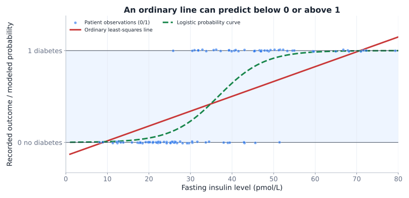
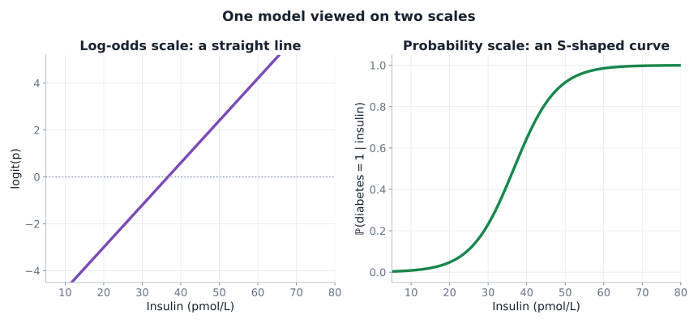
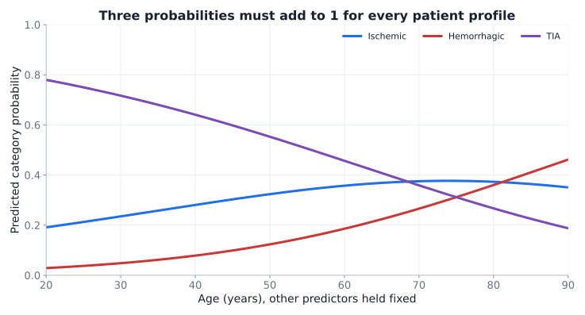
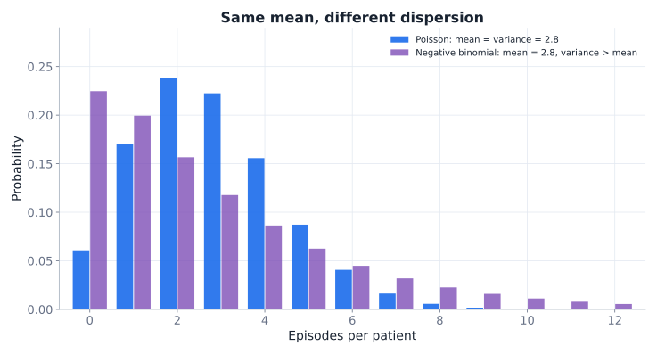
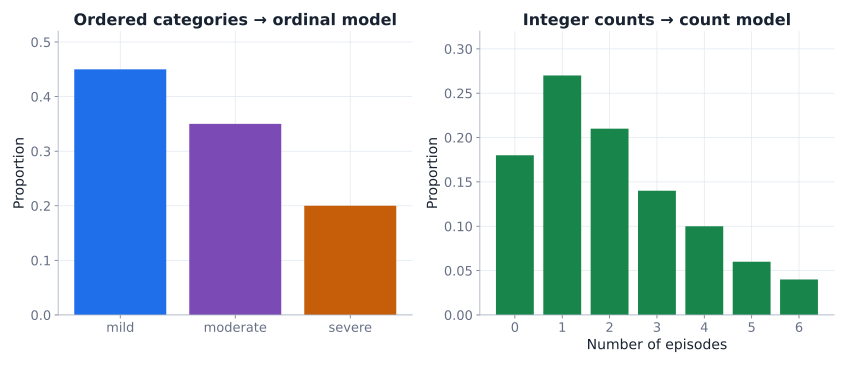
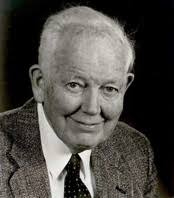

What if the outcome is not continuous and Normally distributed?
The last missing square
What kind of outcome are we explaining?
Outcome ↓ · Predictor →
Categorical
Numerical
Categorical
χ2 / FisherGroup label ↔︎ disease status
Logistic regressionDisease status ~ biomarker level
Numerical
t test / ANOVABlood pressure ~ treatment group
Linear regressionAbsorbance ~ concentration
The model family is driven primarily by the outcome and its data-generating process.
Clinical hook: fasting insulin levels and diabetes
PREDICTOR \(x\)
Insulin
\(10\), \(20\), \(50\) … pmol/L
A continuous laboratory measurement
OUTCOME \(y\)
Diabetes present?
\(y\in\{0,1\}\)
Reference clinical classification for a synthetic study
Research question
How does the probability of diabetes change with fasting insulin level? A classification threshold is a different decision problem — next week.
Clinical note: Fasting insulin is not an established diabetes diagnostic criterion, as standard diagnosis relies on evaluating blood glucose or HbA1c levels; fasting insulin testing helps evaluate pancreatic hormone production and identify insulin resistance but does not independently identify diabetes type. NIDDK
A binary outcome does not behave like absorbance

Jitter only makes the binary points visible. Linear regression can produce predicted values outside \([0,1]\) and uses the wrong error/variance structure.
Explore probability → odds → logit
Move one probability; watch two transformations
probability\(p\)0.50
odds\(p/(1-p)\)1.00
logit\(\log[p/(1-p)]\)0.00
For \(p=0.20\), \(\mathrm{odds}=0.20/0.80=0.25\).
Endpoints:
at \(p=0\)\(\mathrm{odds}=0\) and logit tends to \(-\infty\);
at \(p=1\) odds and logit tend to \(+\infty\).
The logit opens the door to a straight line

We model the log-odds, not the raw 0/1 observation.
Logistic regression: the recipe
1 · Linear predictor\(\eta=\beta_0+\beta_1x\)
2 · Log-odds link\(\log\dfrac{p}{1-p}=\eta\)
3 · Back to probability\(p=\dfrac{1}{1+e^{-\eta}}\)
The coefficients are estimated from Bernoulli outcomes using likelihood, not by taking the logit of each observed 0/1.
What do \(\beta_0\) and \(\beta_1\) mean?
INTERCEPT \(\beta_0\)
\(e^{\beta_0}\)
Baseline odds at \(x=0\); may be meaningless if zero is outside the observed domain
SLOPE \(\beta_1\)
\(e^{\beta_1}\)
Multiplicative change in event odds for +1 unit of \(x\)
Odds ratio (OR)
\(OR=e^{\beta_1}\):
above \(1\) → higher odds;
below \(1\) → lower odds;
exactly \(1\) → no odds change per modeled unit.
A worked biomarker coefficient
Illustrative fitted association · not a diagnostic rule
Regression assumptions and model checking still matter; no single ordinary \(R^2\) replaces them. Detailed classification and diagnostics follow in Week 10.
More than two outcome categories
Part III
One binary logit is not always enough
Multinomial outcomes and event counts call for other models.
Multinomial logistic regression
Stroke-presentation categories: ischemic (reference), hemorrhagic, TIA
Hemorrhagic vs ischemic\(\log\dfrac{\mathbb{P}(\mathrm{H})}{\mathbb{P}(\mathrm{I})}=\eta_{\mathrm{H}}(X)\)
TIA vs ischemic\(\log\dfrac{\mathbb{P}(\mathrm{T})}{\mathbb{P}(\mathrm{I})}=\eta_{\mathrm{T}}(X)\)
Probability normalization\(\mathbb{P}(\mathrm{I})=\dfrac{1}{1+e^{\eta_{\mathrm{H}}}+e^{\eta_{\mathrm{T}}}}\)
Each nonreference category has its own log-odds equation. Exponentiated intercepts are baseline odds relative to ischemic, not probabilities; slopes yield relative-category odds ratios.
How do three probabilities move together?

Illustrative synthetic probability profiles while changing age; other predictors are fixed. Each vertical stack adds to 100%.
\(e^{0.80}=2.23\): modeled hemorrhagic-versus-ischemic odds are multiplied by 2.23 for anticoagulant use, with other predictors fixed.
Coefficients are purely illustrative; none assert a clinical relationship, significance, or recommended triage action.
Poisson and negative binomial

Poisson
\(E(Y)=\mathrm{Var}(Y)=\mu\)
Negative binomial
Allows \(\mathrm{Var}(Y)>E(Y)\) (overdispersion)
Two pharmaceutical count examples
Sterile filling line
Bacteria / 10,000 vials
Count events per comparable batch; a Poisson starting point may be useful.
Phase III oncology study
Severe nausea episodes
Counts per patient during follow-up; between-patient heterogeneity may cause overdispersion.
\(\log E(Y_i)=\beta_0+\beta_1x_i+\log(t_i)\)
If observation times \(t_i\) differ, an offset accounts for exposure. \(e^{\beta_1}\) then represents a multiplicative change in the event rate.
Interpretation of units:
In the Poisson example the equation can rewritten as: \(\frac{E(Y_i)}{t_i}=e^{\beta_0+\beta_1x_i}\)
\(E(Y_i)\) is number of bacteria in sample \(i\), \(t_i\) is number of vials in sample \(i\)
\(x\) is a predictor of our choice, e.g. incubation temperature \(\text{°C}\), then \(\beta_1\) is \(\log{\text{(bacteria/vial)}}/\text{°C}\), and \(\beta_0\) is \(\log{\text{(bacteria/vial)}}\)
Ordinal categories have a model too
Nominal 3+ levels
Multinomial logit
No built-in order among categories
Ordered levels
Ordinal logit
Uses ordering, e.g. mild → moderate → severe
Nonnegative counts
Poisson / Negative Binomial
Number of events, possibly accounting for exposure
All are discrete, but they do not describe the same type of outcome.

If Normality is implausible
Part IV
Other inferential tools exist
Know the rationale, not every test’s formula.
Rank-based alternatives
Familiar method
Common rank-based alternative
What to remember
One-sample or paired \(t\)
Wilcoxon signed-rank
Signed ranks of differences; symmetry matters for location interpretation
Independent two-sample \(t\) / Welch
Mann–Whitney / Wilcoxon rank-sum
Ranks across groups; tests relative distributional tendency, not automatically means
One-way ANOVA
Kruskal–Wallis
Rank-based test of distributional differences across groups
These are alternatives, not perfect drop-in equivalents with identical null hypotheses.
Frank Wilcoxon
Henry Mann

D. Ransom Whitney
William Kruskal
W. Allen Wallis
Rank methods are not assumption-free
Outliers / skew
Ranks can reduce sensitivity to extreme magnitudes
Dependence
Study design and pairing still matter
Different shapes
A rank test is not automatically a test of median differences
Better decision rule
Start with the estimand, design, and data-generating process. Inspect distributions. Then choose a method whose assumptions and interpretation fit the question.
Beyond this course
Repeated / clustered observations
Mixed-effects models
Patient, clinic or batch-specific variation; possible correlation and variance structures
Population-average association
GEE
Generalized estimating equations for correlated responses
These address dependence and heterogeneity. They are not automatically fixes for any poor model.
John Nelder
Robert Wedderburn
Check your intuition: which outcome family?
You record the number of adverse-event episodes per patient during 6 months. Which is the most natural starting model?
Choose one.
Interpret an odds ratio
A logistic model reports \(OR=1.50\) for a +10 mmHg SBP change. What does that mean?
Choose one.
Understand the interaction
In \(\operatorname{logit}(p)=\beta_0+\beta_1x+\beta_2s+\beta_3xs\), which coefficient tells us whether the SBP log-odds slope differs by smoking status?
Choose one.
Final check: where can interpretation fail?
Two groups have strongly skewed data and unequal distribution shapes. A Mann–Whitney test is significant. What is safely concluded?
Choose one.
Week 9 synthesis
Binary eventModel probability through a logit; interpret coefficients on the odds-ratio scale.
Several categoriesModel relative-category odds and normalize to probabilities summing to one.
Episode countsUse event-count models and investigate overdispersion and exposure time.
Nonstandard dataRank methods and more advanced dependence models exist; match method to estimand and design.
Next: specialized pharmaceutical applications
Week 10
A fitted probability is not yet a clinical decision. We will examine diagnostic thresholds, sensitivity, specificity, trials, and evidence synthesis.